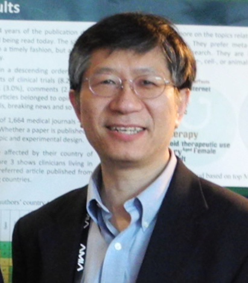

<div class="inside">
<div class="inside">

<div class="frame8x2">
<div class="left">

<div class="infoR"><h3><strong>Dr. Ge awarded R01 grant from NIH/NCI</strong></h3>
<p>Dr. Yaorong Ge is the principal investigator of a recently funded R01 grant from the National Cancer Institute of the NIH. This $1.8M, four year award aims to develop knowledge models using machine learning and knowledge representation methods that enable rapid learning in intensity modulated radiation therapy planning. This project will be a collaborative effort between UNC Charlotte and Duke University Medical Center led by Dr. Ge and Dr. Jackie Wu of the Department of Radiation Oncology at DUMC. </p>
</div>
<div class="info-right">
</div>
</div>
<div class="clear"></div>
</div>
</div>
</div>